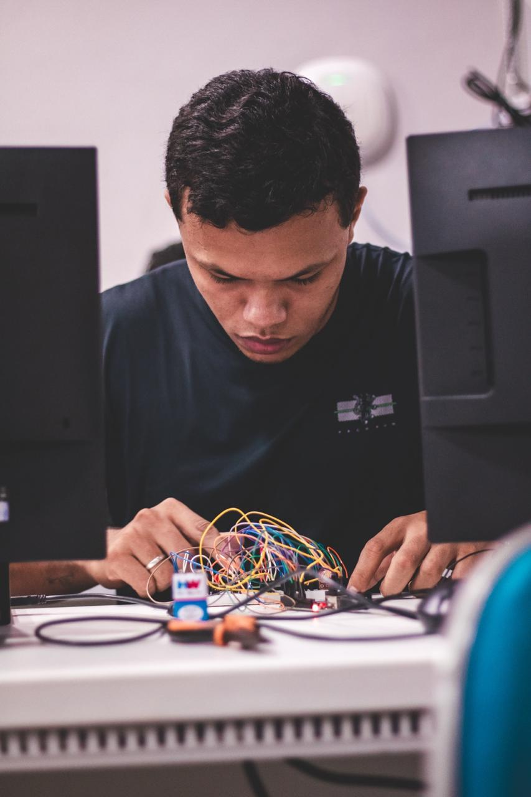
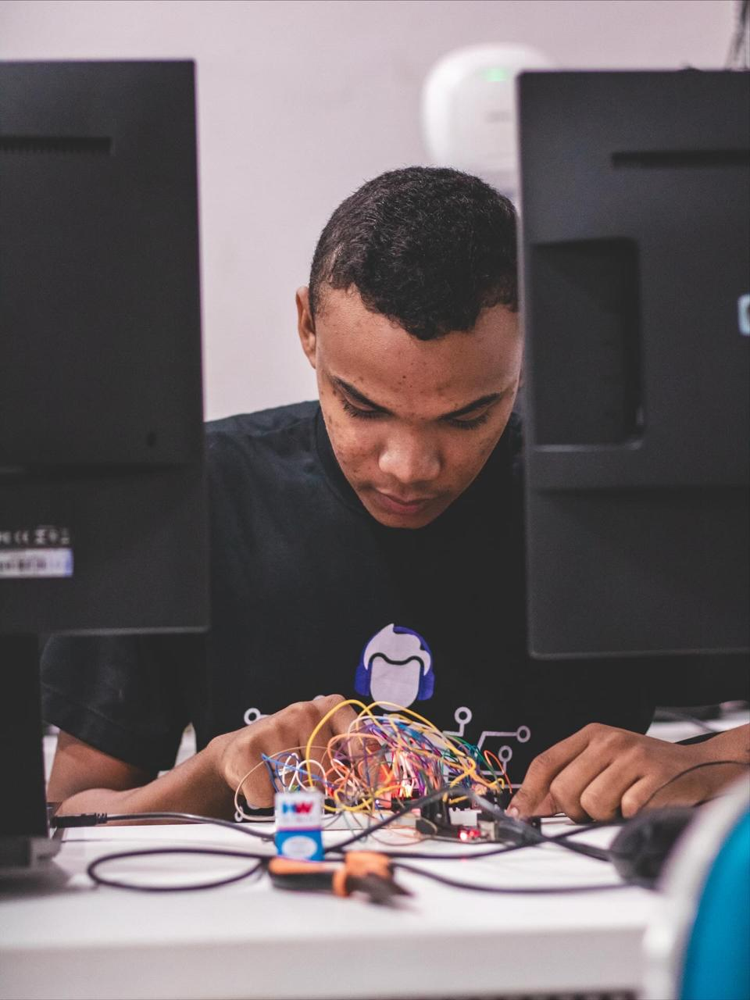
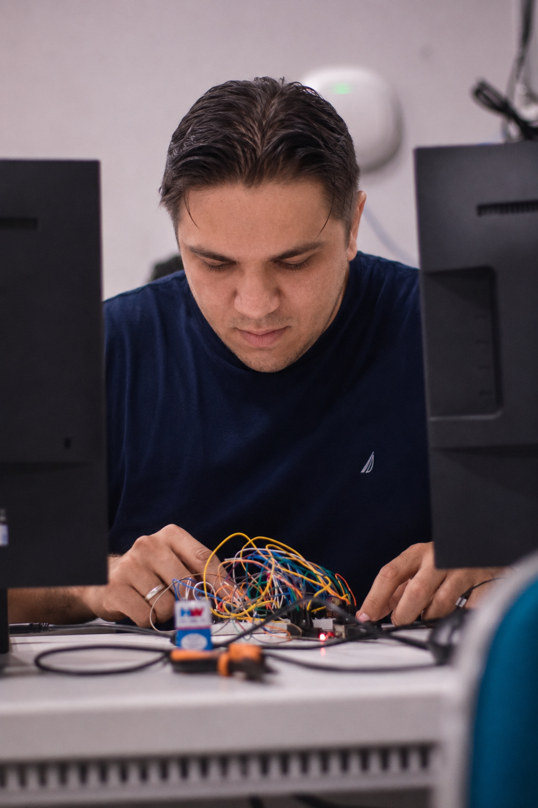

Gabriel Nascimento
Engenharia de Software · BES 2023
Desenvolvimento da linguagem APEXUma linguagem brasileira para aprender Compiladores.
A APEX nasceu como trabalho da disciplina de Compiladores do curso de Engenharia de Software (BES 2023). O objetivo era criar uma linguagem de programação do zero, passando por todas as etapas clássicas: análise léxica, análise sintática, geração de código e execução.
Em vez de criar mais um clone de C ou Python em inglês, decidimos fazer algo diferente: uma linguagem 100% em português brasileiro, com sintaxe acessível para quem está começando a programar mas robusta o suficiente pra criar sistemas web reais.
Criar um interpretador do zero levaria meses. Optamos por uma estratégia consagrada: transpilação. Mesma abordagem que TypeScript usa para virar JavaScript ou Kotlin para virar Java bytecode.
Escolhemos PHP como linguagem-alvo por três motivos:
Em vez de criar uma IDE do zero, integramos a APEX ao editor mais usado do mundo. A extensão fornece syntax highlighting, execução com F5 e diagnostics inline — exatamente como TypeScript ou Python fazem.
Linguagens didáticas tradicionalmente rodam em terminal. Achamos que o resultado visual aumenta a motivação do aluno e mostra que uma linguagem pode ser séria mesmo sendo simples.
┌──────────────────┐
│ arquivo.apex │ Código-fonte em português
└────────┬─────────┘
│
▼
┌──────────────────┐
│ Análise léxica │ Tokenização
│ e sintática │
└────────┬─────────┘
│
▼
┌──────────────────┐
│ Transpilador │ APEX → PHP
└────────┬─────────┘
│
▼
┌──────────────────┐
│ Runtime PHP │ Executa o PHP gerado
└────────┬─────────┘
│
▼
┌──────────────────┐
│ Página HTML/CSS │ Resultado no navegador
└──────────────────┘

Engenharia de Software · BES 2023
Desenvolvimento da linguagem APEX
Engenharia de Software · BES 2023
Desenvolvimento da linguagem APEX
Engenharia de Software · BES 2023
Desenvolvimento da linguagem APEXOrientação: Prof. Wilker José Caminha — disciplina de Compiladores.
Este projeto faz parte da avaliação da disciplina de Compiladores, que cobre:
A APEX implementa todas essas etapas, com foco didático na clareza do código e na demonstração visual dos resultados.
Projeto de uso acadêmico. Pode ser estudado, modificado e usado livremente para fins educacionais.